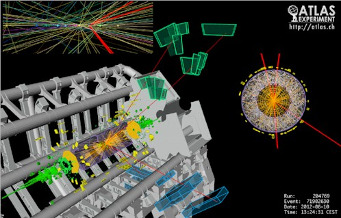

|
 Web-представление учебного пособия профессора Л.Н. Смирновой "Эксперимент ATLAS Большого адронного коллайдера" –М.:МАКС Пресс, 2014.- 256 с. ISBN В пособии представлены материалы курса лекций по результатам эксперимента ATLAS, полученных на данных первого сеанса работы Большого адронного коллайдера 2010-2012гг. Приведены характеристики взаимодействий протонов и ядер свинца, показаны методы анализа взаимодействий частиц при высоких энергиях, приведены первые результаты изучения свойств новой скалярной частицы – бозона Хиггса Стандартной модели, и поиска частиц, предсказываемых моделями за пределами Стандартной модели, в первую очередь частиц, способных прояснить природу темной материи во вселенной.
|